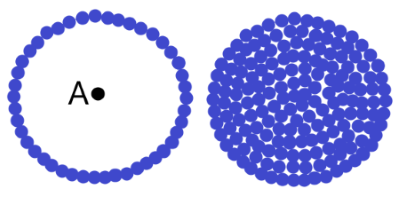
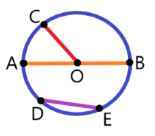
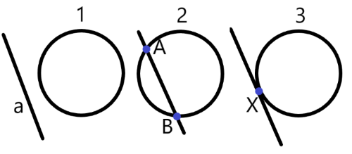
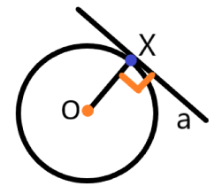
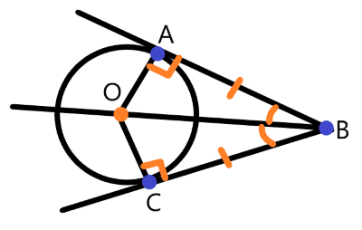

Определение 33:
Геометрическое место точек (ГМТ) — множество всех точек, обладающих общим свойством.
Определение 34:
Окружность — геометрическое место точек, равноудалённых от заданной точки.
Определение 35:
Круг — геометрическое место точек, расстояние от которых до заданной точки (центра круга) не больше данного положительного числа.

Рис. 30. Окружность и круг. Их можно рассматривать не только как единое целое, но и как ГМТ, состоящие из бесконечного количества точек.

Рис. 31. AB — диаметр; AO, OB, OC — радиусы и, следовательно, равны. DE — произвольная хорда.
Определение 36:
Радиус — это отрезок, соединяющий центр окружности с любой точкой, лежащей на окружности.
Определение 37:
Хорда — это отрезок, соединяющий любые две точки на окружности.
Определение 38:
Диаметр — это хорда, проходящая через центр окружности.
Теорема 62:
Диаметр окружности, перпендикулярный хорде, делит эту хорду пополам.
Теорема 63 (обратная к теореме 62):
Диаметр окружности, делящий хорду, которая не является диаметром, пополам, перпендикулярен этой хорде.
Случаи взаимного расположения прямой и окружности
Определение 39:
Секущая окружности — прямая, пересекающая окружность ровно в двух точках.
Определение 40:
Касательная к окружности — прямая, имеющая с окружностью ровно одну общую точку.

Рис. 32. Случаи взаимного расположения прямой и окружности. 1 — прямая и окружность не имеют общих точек; 2 — прямая AB — секущая; 3 — прямая является касательной, X — точка касания.

Рис. 33 к теореме 64.
Теорема 64 (свойство касательной):
Касательная к окружности перпендикулярна радиусу, проведённому в точку касания.
Теорема 65 (признак касательной):
Если прямая, проходящая через точку на окружности, перпендикулярна радиусу в этой точке, то данная прямая — касательная.
Теорема 66 (свойство отрезков касательных):
Отрезки касательных к окружности, проведённые из одной точки, равны и составляют равные углы
с прямой, проходящей через центр окружности.

Рис. 34 к теореме 66. AB и BC — отрезки касательных к окружности. Значит, AB = BC и ∠ABO = ∠OBC.